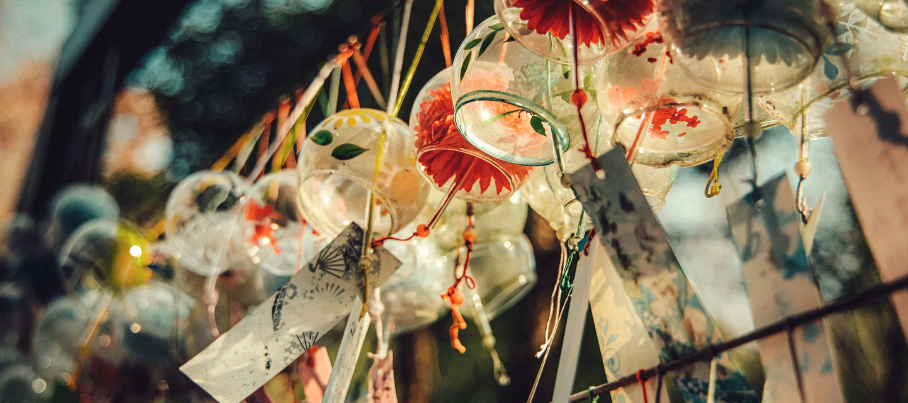
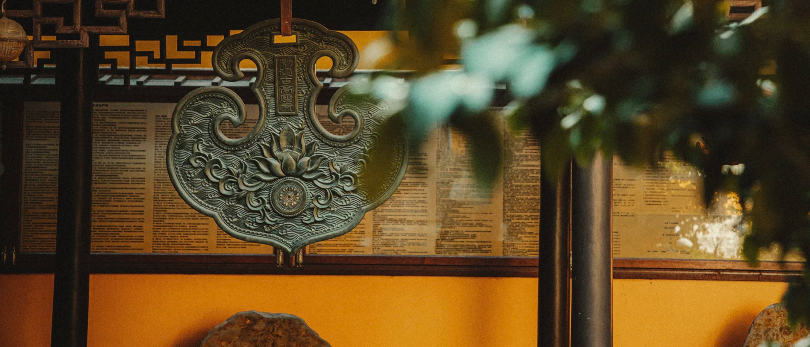
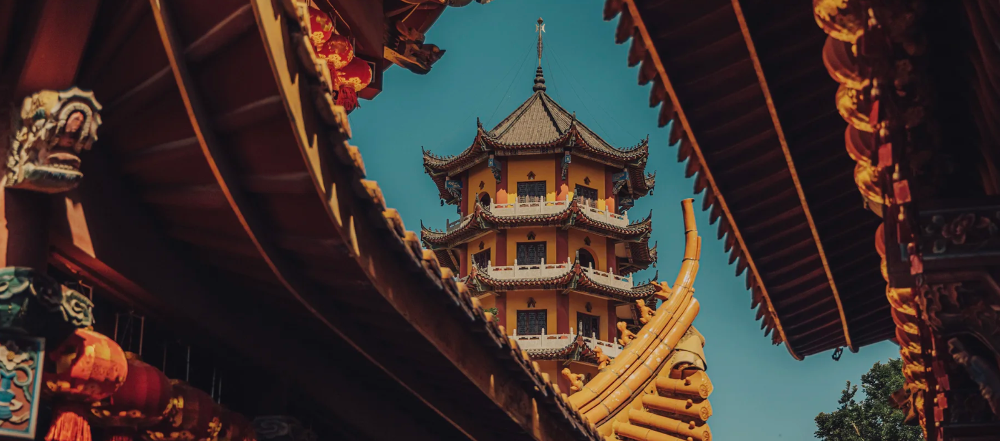

方外云山无废幻境，镜中岁月自有长春
苍苍竹林寺，杳杳钟声晚
在中国的大地上，散落着无数历史悠久的寺庙。这些寺庙是中国传统文化的重要载体。从北魏时期的云冈石窟，到唐代的大雁塔，从宋代的灵隐寺，到明清时期的紫禁城，每一座寺庙都见证了中国历史的变迁，承载着中华民族的智慧与精神。
寺庙文化涵盖了建筑、雕塑、绘画、音乐、文学等多个领域，是中国传统文化的集大成者。寺庙建筑融合了中国传统建筑美学与实用功能，体现了"天人合一"的哲学思想；寺庙雕塑与绘画展现了高超的艺术水平；寺庙音乐与文学则丰富了中国传统文化的内涵，为后世留下了宝贵的精神财富。
在现代社会，寺庙文化依然具有重要的价值和意义。它不仅是我们了解历史、传承文化的重要窗口，更是我们心灵寄托、精神慰藉的重要场所。通过参观寺庙、了解寺庙文化，我们可以感受到中国传统文化的博大精深，增强民族自豪感和文化自信。
南朝四百八十寺，多少楼台烟雨中